Suporte &
infraestrutura
Suporte a usuários, configuração de equipamentos e redes e apoio à infraestrutura de TI em obras e ambientes externos.
Conecto suporte, infraestrutura e gestão de TI para resolver problemas do dia a dia, organizar recursos e apoiar quem usa a tecnologia.
Conheça meu projeto01 / COMO EU ATUO
Minha experiência une a resolução de problemas técnicos ao cuidado com processos, recursos e pessoas.
Suporte a usuários, configuração de equipamentos e redes e apoio à infraestrutura de TI em obras e ambientes externos.
Controle de ativos e licenças, organização de recursos e atenção à qualidade dos serviços, com formação em Gestão de TI.
Treinamentos para usuários e jovens aprendizes sobre ferramentas corporativas, LGPD e boas práticas de tecnologia.
02 / PROJETO EM DESTAQUE
Sistema Inteligente
de Gestão e Controle
Esquema explicativo · não é uma tela do sistema
Desenvolvi o CEN para o gerenciamento de estoque, ativos e finanças empresariais. O projeto reúne minha experiência na operação e meu interesse em criar ferramentas que apoiem a organização e a tomada de decisões.
Análise de requisitos, modelagem do banco de dados, interface, relatórios, controle de acessos e funcionalidades de automação.
Python e PostgreSQL, com apoio do ChatGPT no desenvolvimento. Operação offline e backups automáticos em nuvem pelo OneDrive.
Utilizado pela MJRE Construtora e pela Mega Proteção Veicular, conforme minha experiência apresentada no currículo.
Além dos controles de estoque, ativos e finanças, o projeto inclui relatórios, permissões de acesso e um assistente inteligente integrado, também chamado CEN.
A análise de requisitos e a modelagem de dados fazem parte da minha participação, conectando as necessidades da operação à implementação do sistema.
POR DENTRO DO PROJETO
Do registro de materiais ao acompanhamento financeiro: uma visita às funcionalidades que desenvolvi. Selecione uma imagem para abrir a captura completa em outra aba.
Capturas da interface do CEN / FCdata. Os valores exibidos contextualizam as telas e não representam resultados de economia ou desempenho atribuídos ao projeto.
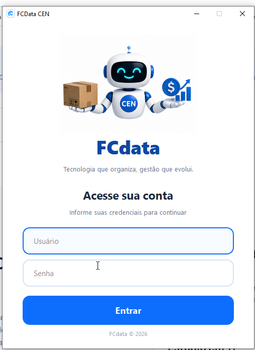
Ampliar tela ↗A tela de entrada reúne a identidade FCdata e os campos de usuário e senha para iniciar uma sessão no CEN.
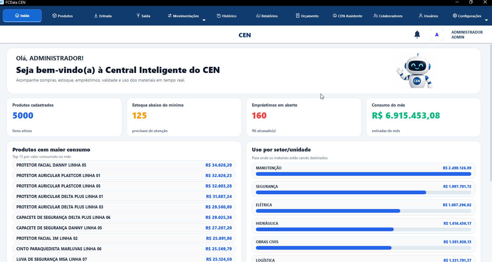
Ampliar tela ↗O painel reúne produtos cadastrados, estoque abaixo do mínimo, empréstimos em aberto e indicadores de consumo. As comparações por produto e setor ajudam a localizar pontos de atenção.
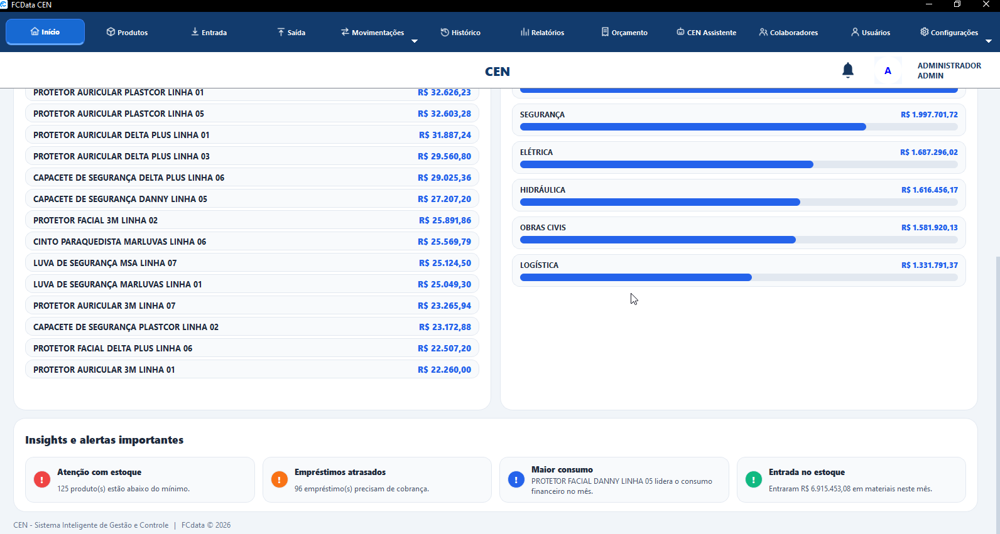
Ampliar tela ↗A continuação do painel apresenta alertas de estoque, empréstimos atrasados, maior consumo e entradas de materiais, aproximando os indicadores das ações do dia a dia.
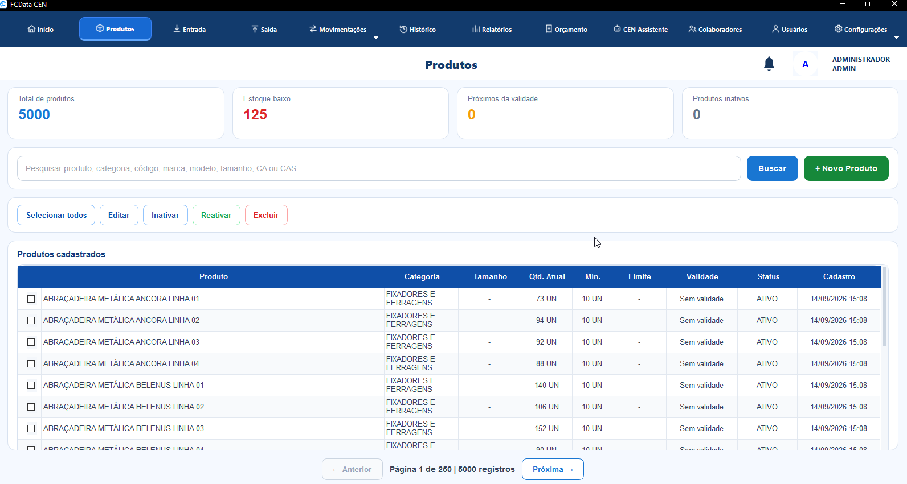
Ampliar tela ↗Pesquisa por características do item, acompanhamento de quantidades e validade e ações de cadastro, edição e inativação. A paginação organiza a consulta ao catálogo.
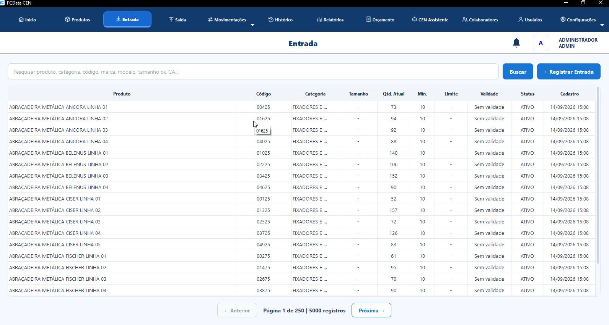
Ampliar tela ↗A consulta de produtos exibe códigos, categorias e saldos e oferece o registro de entradas, apoiando a atualização do estoque.
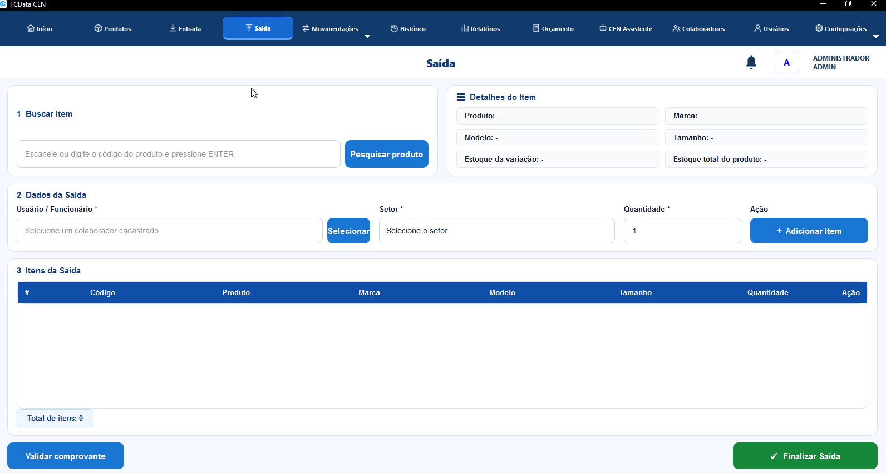
Ampliar tela ↗O fluxo organiza a busca do item, a seleção do colaborador e do setor e a quantidade retirada. Uma lista reúne os itens antes da finalização da saída.
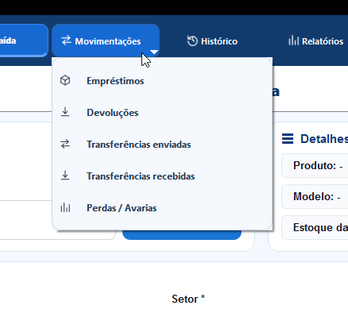
Ampliar tela ↗O menu reúne empréstimos, devoluções, transferências enviadas e recebidas e perdas ou avarias, distinguindo os diferentes caminhos dos materiais.
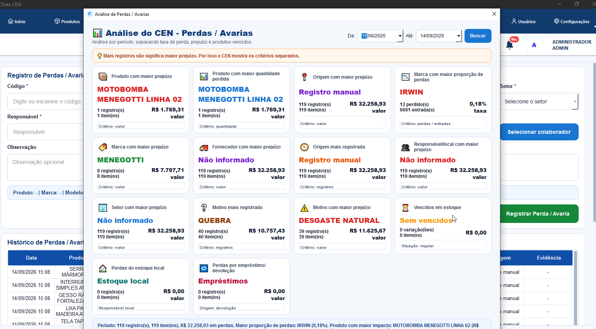
Ampliar tela ↗A análise por período separa quantidade, frequência, valor do prejuízo e proporção de perdas. Essa distinção evita tratar o item com mais registros como necessariamente o de maior impacto financeiro.
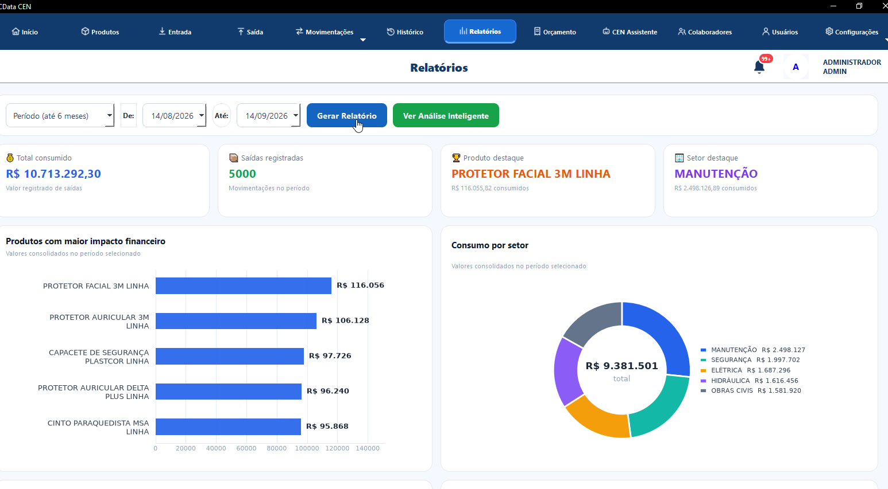
Ampliar tela ↗Filtros de período, indicadores e gráficos apresentam saídas registradas, produtos com maior impacto financeiro e consumo por setor.
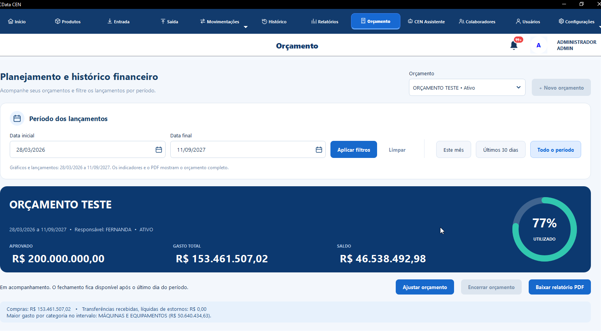
Ampliar tela ↗A tela de orçamento compara valor aprovado, gasto total e saldo, além de mostrar o percentual utilizado. Inclui filtros de período e opção de relatório em PDF.
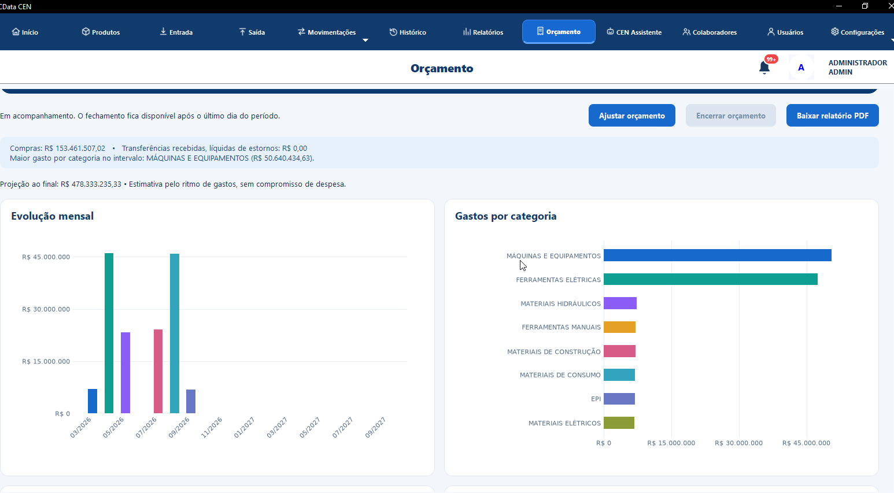
Ampliar tela ↗Gráficos organizam a evolução mensal e a distribuição dos gastos por categoria. A projeção é apresentada na interface como uma estimativa pelo ritmo de gastos.
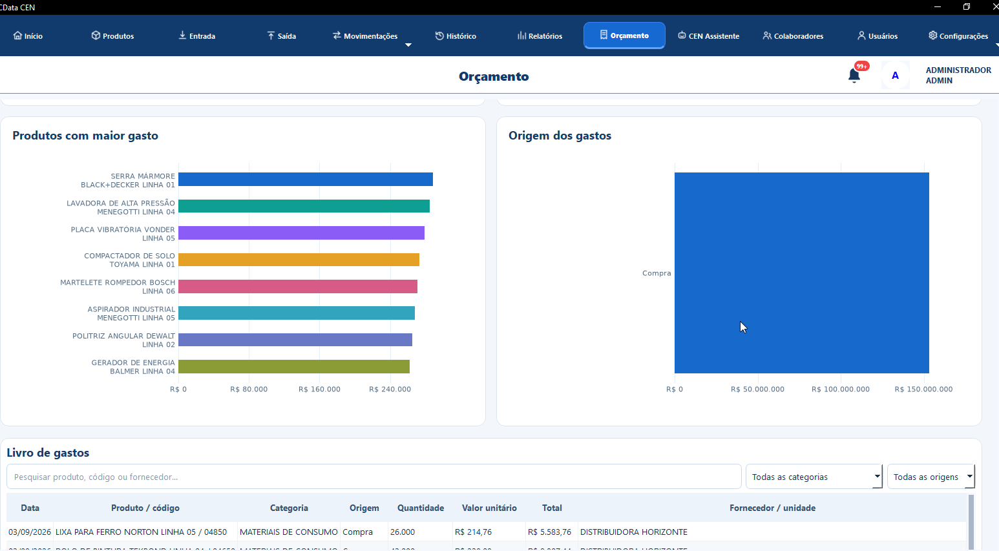
Ampliar tela ↗A visualização destaca produtos com maior gasto e a origem dos valores. O livro de gastos permite consultar lançamentos por produto, código, fornecedor e categoria.
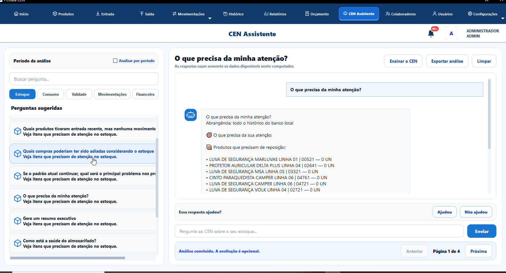
Ampliar tela ↗O assistente reúne perguntas sugeridas sobre estoque, consumo, validade, movimentações e finanças. A tela informa que as respostas usam os dados disponíveis no computador e permite exportar a análise.
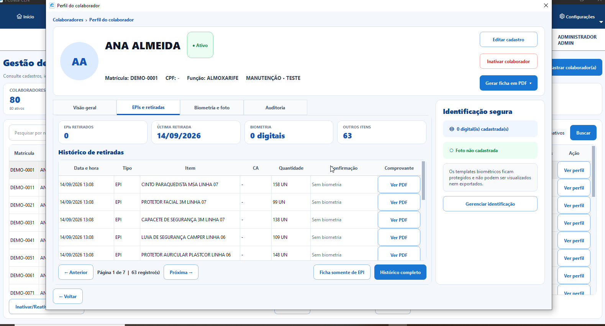
Ampliar tela ↗O perfil demonstrativo reúne dados cadastrais, retiradas de materiais, comprovantes e abas de identificação e auditoria. A captura mostra matrícula DEMO e nenhum registro biométrico cadastrado.
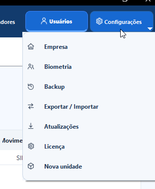
Ampliar tela ↗O menu de configurações concentra as áreas de empresa, biometria, backup, exportação e importação, atualizações, licença e nova unidade.
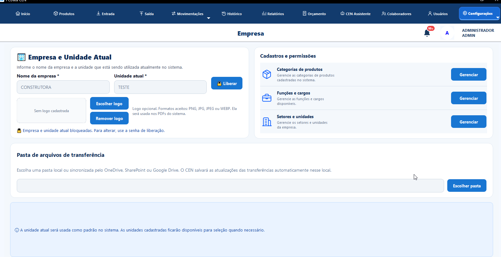
Ampliar tela ↗A configuração identifica a empresa e a unidade, organiza categorias, cargos e setores e permite escolher uma pasta para arquivos de transferência, local ou sincronizada.
03 / MINHA TRAJETÓRIA
Minha experiência anterior em vendas fortaleceu a comunicação e o cuidado com as pessoas. Hoje, levo essa escuta para o suporte e para a busca de soluções em TI.
Estácio · 2026
Suporte presencial em diferentes estados, infraestrutura em obras, controle de ativos e licenças, instalação de redes e treinamentos para usuários.
Suporte técnico, equipamentos de rede, Microsoft 365, OneDrive, sistemas corporativos e certificados digitais A1 e A3.
Cursos em melhoria contínua, gestão de projetos, implantação de governança de TI e análise de problemas e soluções para a comunidade.
04 / VAMOS CONVERSAR
Tenho interesse em oportunidades que conectem suporte, infraestrutura, gestão de TI e melhoria de processos.
Enviar um e-mail